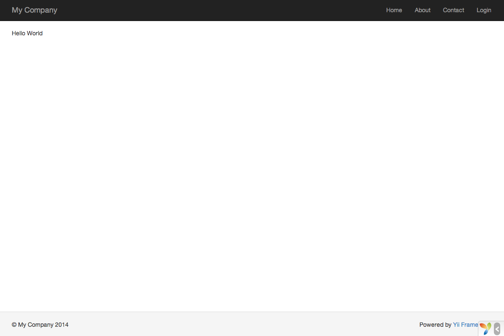

Diciendo Hola ¶
Esta sección describe cómo crear la típica página "Hola Mundo" (Hello World en inglés) en tu aplicación. Para lograr este objetivo, vas a crear una acción y una vista:
- La aplicación enviará la petición de la página a la acción
- y la acción regresará el render de la vista que muestra la palabra "Hola" al usuario final.
A lo largo de este tutorial, aprenderás tres cosas:
- Cómo crear una acción para responder peticiones (request),
- Cómo crear una vista para armar el contenido de la respuesta, y
- Cómo una aplicación envía peticiones a las acciones.
Creando una Acción ¶
Para la tarea "Hola", crearás una acción say que lee
un parámetro message de la petición y muestra este mensaje de vuelta al usuario. Si la petición
no provee un parámetro message, la acción mostrará el mensaje por defecto "Hola".
Info: Las acciones son objetos que los usuarios finales pueden utilizar directamente para su ejecución. Las acciones están agrupadas por controladores (controllers). El resultado de la ejecución de una acción es la respuesta que el usuario final recibirá.
Las acciones deben ser declaradas en controladores. Para simplificar, puedes
declarar la acción say en el controlador SiteController existente. Este controlador está definido
en el archivo de clase controllers/SiteController.php. Aquí está el inicio de la nueva acción:
<?php
namespace app\controllers;
use yii\web\Controller;
class SiteController extends Controller
{
// ...código existente...
public function actionSay($message = 'Hola')
{
return $this->render('say', ['message' => $message]);
}
}
En el código de arriba, la acción say está definida por un método llamado actionSay en la clase SiteController.
Yii utiliza el prefijo action para diferenciar los métodos de acciones de otros métodos en las clases de los controladores.
El nombre que le sigue al prefijo action se mapea al ID de la acción.
Cuando se trata de nombrar las acciones, debes entender como Yii trata los ID de las acciones. Los ID de las acciones siempre son
referenciados en minúscula. Si un ID de acción requiere múltiples palabras, estas serán concatenadas con guiones
(ej., crear-comentario). Los nombres de los métodos de las acciones son mapeados a los ID de las acciones
removiendo los guiones, colocando en mayúscula la primera letra de cada palabra, y colocando el prefijo action al resultado. Por ejemplo,
el ID de la acción crear-comentario corresponde al nombre de método de acción actionCrearComentario.
El método de acción en nuestro ejemplo toma un parámetro $message, el cual tiene como valor por defecto "Hola" (de la misma manera
que se coloca un valor por defecto a un argumento en cualquier función o método en PHP). Cuando una aplicación
recibe una petición y determina que la acción say es responsable de manejar dicha petición, la aplicación llenará
el parámetro con el parámetro que tenga el mismo nombre en la petición. En otras palabras, si la petición incluye un
parámetro message con el valor de "Adios", la variable $message dentro de la acción será sustituida por este valor.
Dentro del método de acción, yii\web\Controller::render() es llamado para hacer render (mostrar o visualizar) un
archivo vista (template) llamado say. El parámetro message tambien es pasado al view para que pueda ser utilizado ahí.
El resultado es devuelto al método de la acción. Ese resultado será recibido por la aplicación y mostrado al usuario final en el
navegador (como parte de una página HTML completa).
Creando una Vista ¶
Las vistas son scripts que escribes para generar una respuesta de contenido.
Para la tarea "Hola", vas a crear una vista say que imprime el parámetro message recibido desde el método action, y pasado por la acción a la vista:
<?php
use yii\helpers\Html;
?>
<?= Html::encode($message) ?>
La vista say debe ser guardada en el archivo views/site/say.php. Cuando el método yii\web\Controller::render()
es llamado en una acción, buscará un archivo PHP llamado views/ControllerID/NombreVista.php.
Nota que en el código de arriba, el parámetro message es procesado por yii\helpers\Html::encode()
antes de ser impreso. Esto es necesario ya que el parámetro viene de un usuario final, haciéndolo vulnerable a
ataques cross-site scripting (XSS) pudiendo inyectar código de Javascript malicioso dentro del parámetro.
Naturalmente, puedes colocar mas contenido en la vista say. El contenido puede consistir de etiquetas HTML, texto plano, e inclusive código PHP.
De hecho, la vista say es sólo un script PHP que es ejecutado por el método yii\web\Controller::render().
El contenido impreso por el script de la vista será regresado a la aplicación como la respuesta del resultado. La aplicación a cambio mostrará el resultado al usuario final.
Probándolo ¶
Después de crear la acción y la vista, puedes acceder a la nueva página abriendo el siguiente URL:
http://hostname/index.php?r=site%2Fsay&message=Hello+World

Esta URL resultará en una página mostrando "Hello World". La página comparte el mismo encabezado y pie de página de las otras páginas de la aplicación.
Si omites el parámetro message en el URL, verás que la página muestra sólo "Hola". Esto es porque message es pasado como un parámetro al método actionSay(),
y cuando es omitido, el valor por defecto "Hola" será utilizado.
Info: La nueva página comparte el mismo encabezado y pie de página que otras páginas porque el método yii\web\Controller::render() automáticamente inyectará el resultado de la vista
sayen el layout, que en este caso está localizada enviews/layouts/main.php.
El parámetro r en el URL de arriba requiere más explicación. Se refierea a route (ruta), y es el ID amplio y único de una aplicación
que refiere a una acción. El formato de las rutas es ControllerID/ActionID. Cuando la aplicación recibe una petición, revisará este parámetro,
utilizando la parte del ControllerID para determinar cual clase de controlador será inicializado para manejar la petición. Entonces, el controlador utilizará
la parte ActionID para determinar cual acción debe ser inizializada para hacer realmente el trabajo.
En este ejemplo, la ruta site/say será respondida por la clase controlador SiteController y la acción say. Como resultado,
el método SiteController::actionSay() será llamado para manejar el requerimiento.
Info: Al igual que las acciones, los controladores tambien tienen ID únicos que los identifican en una aplicación. Los ID de los Controladores utilizan las mismas reglas de nombrado que los ID de las acciones. Los nombres de las clases de los controladores son derivados de los ID de los controladores removiendo los guiones de los ID, colocando la primera letra en mayúscula en cada palabra, y colocando el sufijo
Controlleral resultado. Por ejemplo, el ID del controladorpost-comentariocorresponde al nombre de clase del controladorPostComentarioController.
Resumen ¶
En esta sección, has tocado las partes del controlador y la vista del patrón de diseño MVC.
Has creado una acción como parte de un controlador para manejar una petición específica. Y también has creado una vista para armar el contenido de la respuesta.
En este simple ejemplo, ningún modelo ha sido involucrado ya que el único dato que fue utilizado fue el parámetro message.
También has aprendido acerca de las rutas en Yii, que actúan como puentes entre la petición del usuario y las acciones del controlador.
En la próxima sección, aprenderás como crear un modelo, y agregar una nueva página que contenga un formulario HTML.